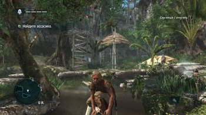
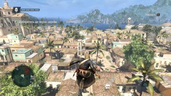
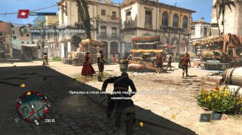

Он появился на свет в городе Суонси (Уэльс) в 1693 году в семье фермера Бернарда Кенуэя
и Лайнетт Хопкинс. В 1703 году семья переехала на ферму около города Бристоль.
К шестнадцати годам Эдвард отказался от фермерства, проводя все свое время в барах в
городе, пьянствуя и бездельничая.
В 1711 году Кенуэй встретил девушку по имени Кэролайн Скотт. Хотя девушка была старше
его на два года, в 1712 году они поженились. Однако через год, Эдвард понял что не создан
для семейной жизни, после чего решил исполнить свое желание стать капером и воевать против испанцев.
После расставания, Кэролайн вернулась к родителям не сообщив о том, что беременна.
Вскоре она родила дочь Дженифер.
Эдвард сделался капером на судне Бена Хорниголда. Он проплавал с ним лишь год, так как
странами был подписан мирный договор. Оставшись без работы, Кенуэй ударился в пиратство.
В 1715 году пиратское судно героя атаковало корабль на котором находился ассасин Дункан
Уолпол. Оба корабля была затоплены, а Эдвард и Дункан оказались за бортом, очнувшись на
острове. Партнерства у них не получилось и после схватки Уолпол был повержен.
На его теле убитого Эдвард обнаружил письмо губернатора Кубы, карты и странный куб. Так
как в письме говорилось, что доставив эти вещи в Гавану, ассасин получит большое вознаграждение,
Кенуэй решил выдать себя за Уолпола надев его одежду.
Эдвард прибыл в Гавану, в особняк губернатора, где встретил капера Вудса Роджерса и
контрабандиста Жульена дю Касса. Позже, губернатор Лауреано Торрес, посвятил всех троих
в Орден Тамплиеров. Торрес рассказал о том, что тамплиеры ищут древнюю “Обсерваторию”,
с помощью которой можно контролировать всех людей на земле и знает о ее место нахождении лишь “Мудрец”.
Кенуэй решил сам найти “Обсерваторию” с помощью “Мудреца” (которого знал в лицо) и
продать эту информацию за хорошие деньги. Однако, тамплиеры узнали что он выдает себя
за другого, после чего Эдвард был выслан в Англию. Плывя на испанском судне в кандалах,
герой познакомился рабом по имени Адевале. Вместе, им удалось угнать корабль, впоследствии назвав его “Галка”
Прибыв на Нассау, Эдвард встретился со своими старыми друзьями Эдвардом Тэтчем “Черная борода”,
Беном Хорниголдом и Джеймсом Киддом, с которыми освобождал плененных пиратов и боролся с британцами.
Боясь, что тамплиеры узнают о том, что Кенуэй все еще жив, Эдвард выследил и убил Жульена дю
Касса. В 1716 году Эдвард пробравшись в поместье убитого дю Касса, где пираты нашли броню
тамплиеров и карты, с указанием мест укрытий ассасинов.
Отправившись в Тулум, Эдвард встретился с Джеймсом Киддом и карибским ассасином А-Табем.Кидд
признался Кенуэю от том что он ассасин и поведал историю противостояния его ордена с тамплиерами.
Отныне Эдвард помогал ассасинам найти “Обсерваторию”.
Так как Кенуэй видел “Мудреца”, он отправился на его поиски. В 1717 году Эдвард был близок к
поимке этого человека, однако, тот узнал в нем тамплиера и сбежал. Для себя, Эдвард открыл
еще одну тайну – Джеймс Кидд был женщиной по имени Мэри Рид.
В 1718 году все пираты получили амнистию от нового губернатора Багамских островов и
город Нассау (Пиратскую республику) на котором находился Кенуэй с друзьями, обложил
Британский флот. Эдвард принял помилование, после чего сбежал с Нассау.
В конце 1718 года, Эдвард узнал о предательстве Хорниголда, который переметнулся к тамплиерам.
Он оправился на остров Окракок к Черной бороде, что бы попросить его отправиться в Вест-Индию.
Однако, Тэтч отказался. Вскоре, на его корабли было совершено нападение британцев.
Черная борода был убит на глазах у Эдварда.
В 1719 году Кенуэй продолжил искать “Мудреца”, который предположительно был рабом на корабле
“Принцесса”. Эдвард нашел “Мудреца” у берегов Африки. Он узнал истинную личность человека которым
оказался пират Бартоломью Робертс.
Что бы узнать где находится “Обсерватория” Эдвард выполнил для Робертса несколько заданий:
захватил корабль “Носсо-Сеньор” где находились фиалы с кровью и убил теперь уже тамплиера Хорниголда.
На острове Лонг Бэй, Робертс проводил Кенуэя в Обсерваторию. Бартоломью показал как устроено
сооружение. С помощью фиалов с кровью королей и капитанов, можно было шпионить за ними по всему
миру, проектируя событие в реальном времен.
После небольшого просмотра возможностей Обсерватории, Робертс предал Кенуэя, забрав хрустальный
череп активирующий систему и заперев его внутри. Эдвард нашел выход, но случайно напоролся на нож.
Бартоломью продал раненого пирата британцам.
Так Кенуэй попал в тюрьму, где просидел полгода. Тамплиеры предлагали ему свободу в обмен на
информацию об Обсерватории, но он отказался. Эдварда освободил ассасин А-Табай, которому была нужна
помощь в спасении так же плененных Мэри Рид и Энн Бонни. Во время спасения Рид (в прошлом Джеймс Кидд)
умерла на руках Эдварда.
Вскоре Кенуэйя покинул и его друг Адевале, уйдя к ассасинам, обвиняя пирата к большой жажде наживы и
богатства. Эдвард начал видеть видения, где его бывшая жена Кэролайн и Мэри Рид, уговаривали его
остановиться и подумать над своей жизнью. Герой отправился в Тулум, где решив искупить вину перед
прошлым, вступил в Орден Ассасинов.
Кенуэй продолжил плавать на “Галке” взяв к себе в заместители Энн Бонни (подругу Мэри Рид). Он
поставил перед собой цель убить глав тамплиеров и Бартоломью Робертса.
В 1721 году Эдвард убил губернатора Багамских островов и тамплиера Вудса Роджерса. Вскоре ассасин
выследил и убил Робертса, который вернул ему хрустальный череп из Обсерватории.
Поиск Великого Магистра Ордена Тамплиеров Лауреано Торреса привел Эдварда к острову Лонг Бэй, к
Обсерватории. Там то Кенуэй и убил свою последнюю цель. Ассасины решили запечатать здание до лучших времен.
Кенуэй решил наладить свою жизнь и вернуться к бывшей жене, но узнал что она умерла два года назад.
Так же он узнал, что у него есть дочь Дженифер.
В 1722 году Эдвард Кеннуэй покончил с пиратством, уехав в Лондон с дочерью. В Лондоне герой купил
поместье, встретил девушку Тессу, на которой и женился. В 1725 году у них родился сын Хэйтем.
С раннего детства Эдвард тренировал своего сына, что бы тот стал лучшим ассасином.
Имея большую недвижимость в Англии Эдвард имел много управляющих. Одним из управляющих был тамплиер
Реджинальд Берч, ухаживающий за дочерью Хэйтема, Дженифер. В 1734 году старый пират узнал правду о
своем частом госте, после чего выгнал его.
В 1735 году на поместье напали. Защищая свою семью Эдвард в свои 42 года, погиб от рук неизвестного
(тамплиера нанятого Реджинальдом Берчем).
Название: Assassin's Creed IV: Black Flag
Дата выхода: 2013 г.
Жанр: Action, 3D, 3rd Person
Разработчик: Ubisoft Montreal
Издатель: Ubisoft
Платформа: РС
Тип издания: Rip
Язык интерфейса: Русский, Английский
Язык озвучки: Русский, Английский
Таблетка: Вшита (3DM)
Описание: События Assassin's Creed 4: Black Flag развиваются в 1715 году.
Пираты правят Карибами и даже основали собственную Республику, где коррупция,
алчность и жестокость встречаются на каждом шагу. Среди всего этого беспорядка
можно выделить дерзкого молодого капитана по имени Эдвард Кенуэй. Своим стремлением
к славе он заработал уважение, сравнимое даже с Черной Бородой, но это также втянуло
его в древнюю войну между Ассасинами и Тамплиерами. Войну, которая может уничтожить все,
что построили пираты. В роли пирата-ассасина Эдварду предстоит посетить более 50 локаций –
острова, города, порты, рыбацкие деревушки, скрытые бухты, места кораблекрушений, сахарные
плантации и даже густые джунгли. В какие именно из этих зон и в каком порядке попадает Эдвард,
зависит только от игрока – разработчики предоставили полностью открытый мир.
Системные требования:
✔ Операционная система: Windows Vista SP2 or Windows 7 SP1 or Windows 8 (both 32/64bit versions) / 10
✔ Процессор: Intel Core2Quad Q8400 @ 2.6 GHz or AMD Athlon II X4 620 @ 2.6 GHz
✔ Оперативная память: 2Gb
✔ Видеокарта: Nvidia Geforce GTX 260 or AMD Radeon HD 4870 (512MB VRAM with shader Model 4.0 or higher)
✔ Звуковая карта: DirectX Compatible with latest drivers
✔ Свободное место на жестком диске: 15 Gb
Особенности игры:
ОТВАЖНЫЙ БУНТАРЬ АССАСИН Станьте Эдвардом Кенуэйем,
харизматичным и жестоким капитаном пиратов, прошедшим обучение Ассасинов.
Эдвард умело использует скрытый клинок ордена Ассасинов и новые виды оружия,
включая двойные абордажные сабли и набор из четырёх пистолетов.
ИССЛЕДУЙТЕ ОТКРЫТЫЙ МИР, ПОЛНЫЙ РАЗООБРАЗНЫХ ВОЗМОЖНОСТЕЙ Исследуйте самый широкий
и разнообразный из когда-либо созданных миров Assassin’s Creed. Исследуйте более
75 уникальных мест от Кингстона до Нассау и проживите жизнь настоящего пирата:
- Разграбляйте потерпевшие кораблекрушение судна.
- Убивайте Тамплиеров в цветущих городах.
- Охотьтесь за редкими животными в диких джунглях.
- Ищите сокровища в затерянных руинах.
- Скрывайтесь от врагов в секретных бухтах.
СТАНЬТЕ САМЫМ ОПАСНЫМ ПИРАТОМ КАРИБОВ Управляйте вашим кораблем “the Jackdaw” и
внушайте страх во всех, кто встретит вас на своем пути. Мародёрствуйте и подсчитывайте
награбленное, улучшайте ваш корабль, покупайте больше амуниции и припасов, которые
понадобятся вам для будущих морских сражений. Улучшения корабля чрезвычайно важны для
морских успехов Эдварда на протяжении всей игры. Атакуйте и берите на абордаж массивные
галеоны, наберите команду преданных матросов и отправляйтесь навстречу приключениям.
УЗНАЙТЕ ВСЕ О НАСТОЯЩЕЙ ПИРАТСКОЙ ЖИЗНИ Окажитесь среди таких легендарных персонажей,
как Черная борода, Калико Джек, Бенджамин Хорниголд и установите республику беззакония
на Багамских островах, что в итоге станет началом Золотой эпохи пиратства.
Особенности рипа:
За основу взят [Steam-Rip] от от Let'sРlay (Версия игры 1.07, загружена 11 сентября 2014 г )
Вырезаны все локализации кроме русской и английской | удален мультиплеер
Ничего не перекодировано
Все пути реестра сохранены
Установка 12 минут (Зависит от мощности компьютера)
Текст и озвучка меняется в меню игры в любом сочетании
Дополнительный контент:
- Aveline
- Freedom Cry
- Time saver: Resources Pack
- Time saver: Collectibles Pack
- Time saver: Activities Pack
- Death Vessel Pack
- Crusader & Florentine Pack
- Time saver: Technology Pack
- MP Character Pack: Blackbeard's Wrath
- Illustrious Pirates Pack
- Guild of Rogues
Примечание:
DLC: *Aveline* открывается после первого сохранения в одиночной игре.
DLC: *Freedom Cry* открывается после первого сохранения в одиночной игре и выхода из игры.
Repack от xatab


